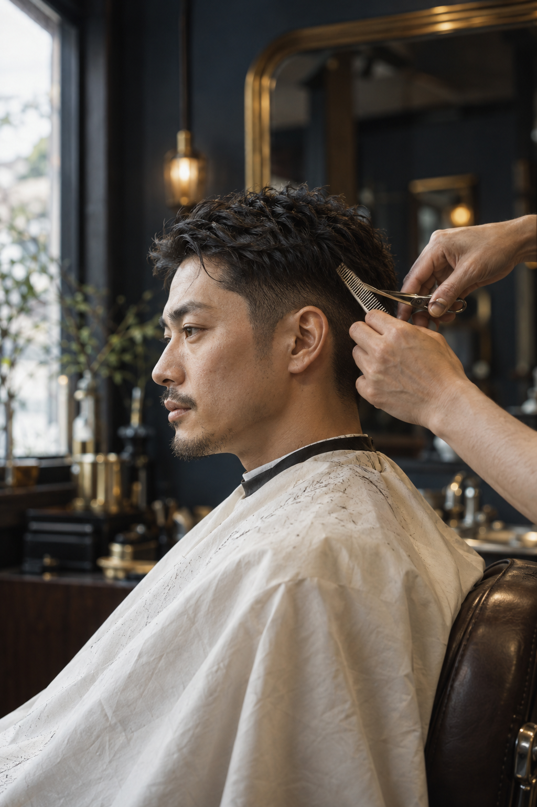
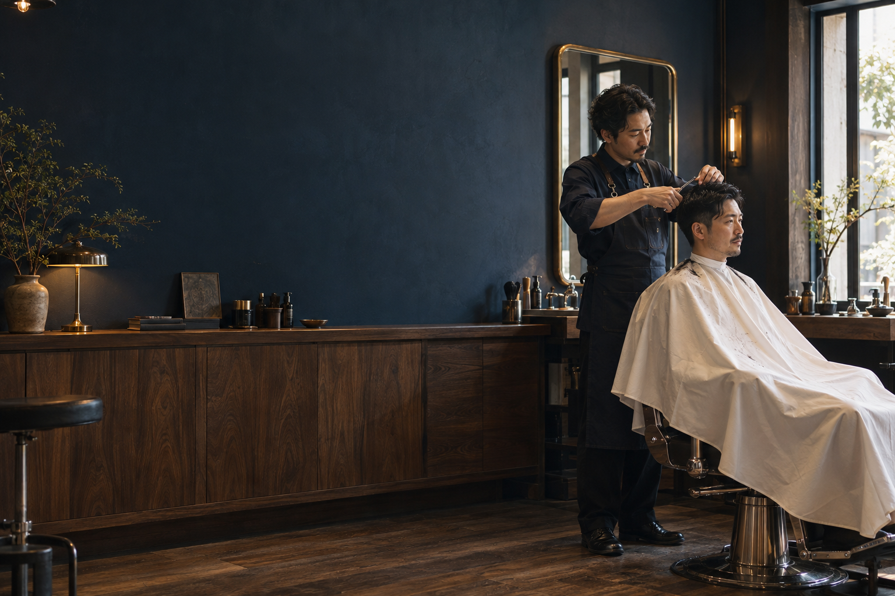
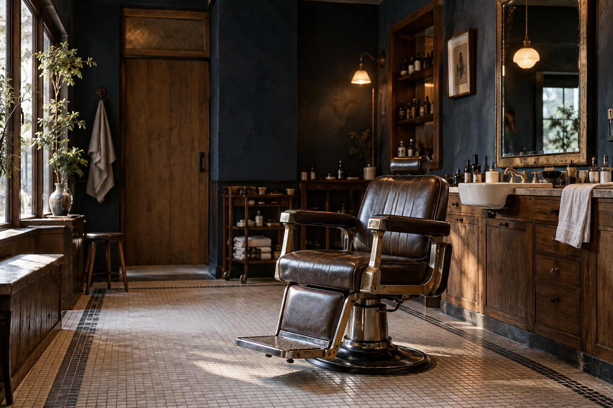
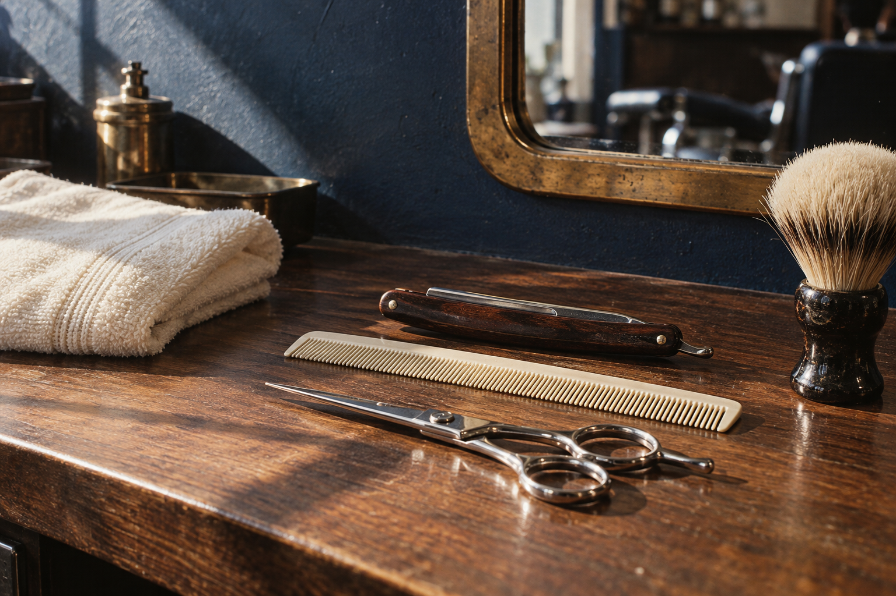
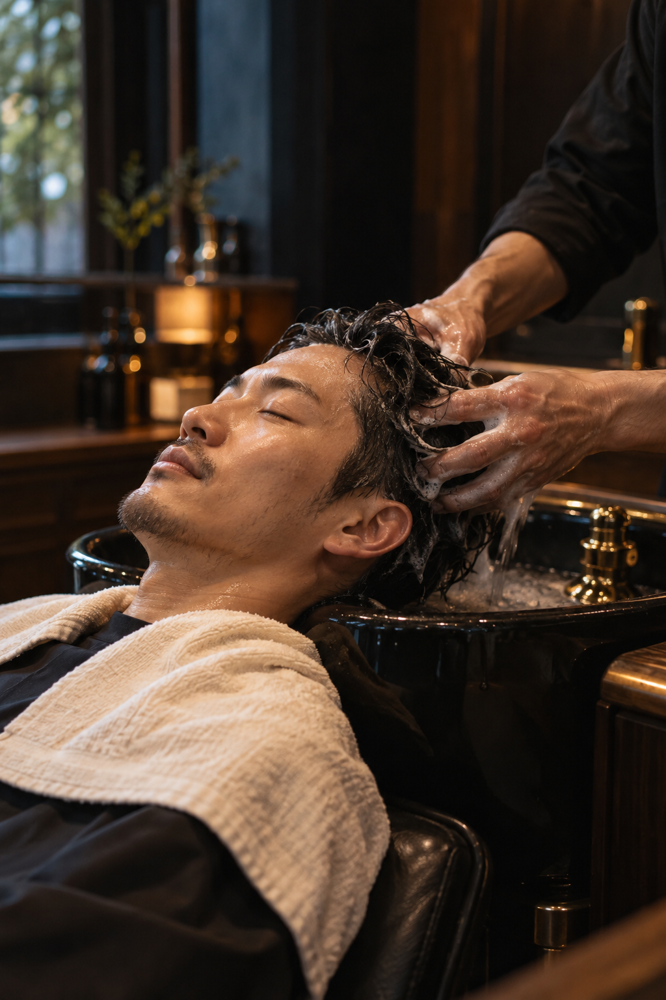
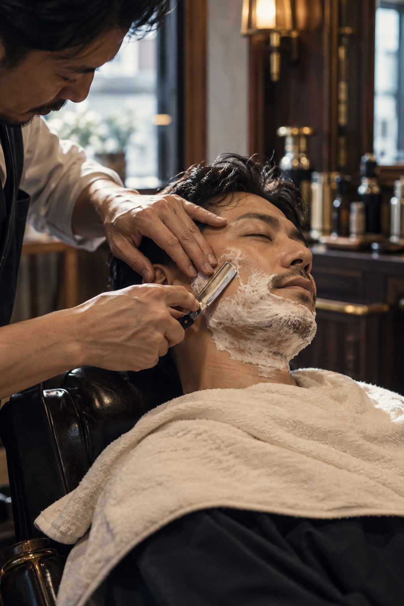

Service 01自然になじむ
自然になじむ
カットの手仕事
髪の流れ、頭のかたち、朝の過ごし方。あなたの日常を聞きながら、無理なくなじむスタイルを一緒に探します。伸びてからも扱いやすい、いつもの自分にちょうどいい髪型へ。


A LITTLE TIME, JUST FOR YOU.
髪と、気持ちを整える。

THE TOOLS OF A QUIETER DAY.凪いだ時間を、日常に。
慌ただしい毎日に、少しだけ余白を。
鏡の前に座ったら、肩の力を抜いて。
いつもの髪型を、もう少し心地よく。
伸びてからも自然になじむカットと、
ゆっくり味わうシェービング。
ここを出るとき、今日が少し軽くなる。
凪理容室は、そんな時間をつくります。
凪理容室では、髪と肌の状態を確かめ、
お客様一人ひとりの好みや
毎日の過ごし方に向き合います。
いつもの自分にしっくりくる、
心地よい手仕事を大切にしています。

髪の流れ、頭のかたち、朝の過ごし方。あなたの日常を聞きながら、無理なくなじむスタイルを一緒に探します。伸びてからも扱いやすい、いつもの自分にちょうどいい髪型へ。

カットのあとの、小さな休憩。やさしく洗って、心地よい力加減でほぐす。頭を休めて、肩の力を抜いて、自分のための時間をもう少しだけ。力加減は好みに合わせて調整します。

温かいタオルに包まれて、ひと息。肌の様子を確かめながら、ゆっくりと丁寧に。仕上げの保湿まで、心地よさを大切にします。鏡の前で過ごす時間が、今日を少し軽くするように。
04 — STYLE BOOK
短く、すっきり。少し長く、自然に。
日常に合うかたちを、一緒に。
髪の流れを活かして、朝のセットを軽やかに。
耳まわりをきれいに。自然につながるグラデーション。
長さと動きを残して、やわらかな印象に。
架空のヘアスタイルを生成した作例です。すべてカットメニューを想定しています。
05 — THE ATMOSPHERE
椅子、道具、光。
ここで過ごす時間のかけら。
06 — MENU & PRICE
気負わず通える、
いつものメニュー。
どのメニューでも、はじめに髪や肌の状態、ご希望をお聞きします。
税込の架空料金です。
メニューを開くと内容が見られます。
カウンセリング・カット・シャンプー・スタイリング。目安60分。日常のお手入れもご案内します。
カットメニューに、温タオル・シェービング・保湿を組み合わせます。目安80分。
シャンプーと頭皮のもみほぐし。目安20分。カットと組み合わせるお手入れです。
温タオル・シェービング・保湿。目安30分。肌の状態によって内容を相談します。
自然な形を活かした眉のカットとお手入れ。カットメニューに追加できます。
07 — YOUR FIRST VISIT
髪型が決まっていなくても。
相談するところから、はじめましょう。
迷ったら、まずはカットから。シェービングやヘッドケアを組み合わせることもできます。予約画面で、料金と所要時間をご確認ください。
写真を見せても、言葉で伝えても。髪の流れや、普段のお手入れを確かめながら、無理なくなじむかたちを一緒に考えます。
髪や肌の状態に合わせて、丁寧に。静かに過ごしたい日も、気兼ねなく。気になることは、その場でお聞かせください。
仕上げ方や、次に整えるタイミングをご案内。自分でも扱いやすい髪で、いつもの毎日へ。
好みや、普段のお手入れから一緒に考えます。作例の写真を見ながら相談することもできます。
カットは約60分、シェービングとのセットは約80分。ヘッドケアを加える場合は、さらに約20分が目安です。料金と時間は予約画面でも確認できます。
必要な確認は丁寧に、そのあとは心地よい距離で。静かに過ごしたいと、お気軽にお伝えください。
自分のための、
小さな時間を。
08 — COME AS YOU ARE
街の片隅に、
あなたのいつもの場所。
PRIVATE BARBER
NAGI BARBER
架空店舗の設定です。実際の住所・営業情報ではありません。
A MOMENT FOR YOURSELF.
いつもの自分に、ひと息を。
予約画面を体験できるデモです。